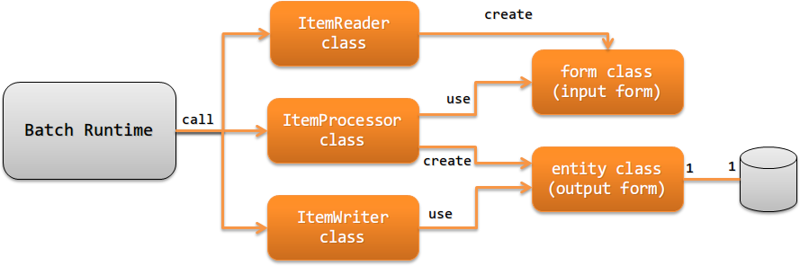

4.1.2. Responsibility Assignment of Application¶
This section describes the classes to be implemented and their responsibilities when creating a JSR352-compliant batch application.
4.1.2.1. For Batchlet step¶
This section describes the classes to be implemented and their responsibilities in the case of Batchlet step.
{kind=link}
4.1.2.2. For Chunk step¶
This section describes the classes to be implemented and their responsibilities in the case of Chunk step.
{kind=link}
- Item reader (ItemReader class)
Implements the process to read the data to be processed from the data source (file, database, etc.). Converts the read data into a form and returns the form.
Item reader is an interface specified by JSR352. For this reason, see JSR352 Specification(external site) for details of the implementation method.
- Item processor (ItemProcessor class)
Executes the business logic based on the data read by the item reader to generate the data to be output.
If the output target is a database, converts the data after the execution of business logic into an entity. If the output target is not a database, converts the data after the execution of business logic to a form for output.
Item processor is an interface specified by JSR352. For this reason, see JSR352 Specification(external site) for details of the implementation method.
Tip
If the data read by the item reader is externally acquired data, checks the input values before executing the business logic. For information about checking input values, see checking input values.
- Item writer (ItemWriter class)
Item writer implements the process to output the entity or form, converted by the item processor, to a database or file.
Item writer is an interface specified by JSR352. For this reason, see JSR352 Specification(external site) for details of the implementation method.
- Form (form class)
This class holds the data read by the item reader. A class that holds the data to be output if the output target is not a database.
In the case of a form that holds unreliable values such as externally received files, all property types should be string. For the reason, see Bean Validation. In the case of a binary item, the type is defined by a byte array.
- Entity (entity class)
- A class with a one-to-one correspondence with a table. The entity class has property corresponding to columns.
| [1] | For details on the character string returned by the batchlet (end status of batchlet), see JSR352 Specification (external site) . |
| [2] | For example, it refers to the execution of SQL that completes the process only by insert ~ select. |